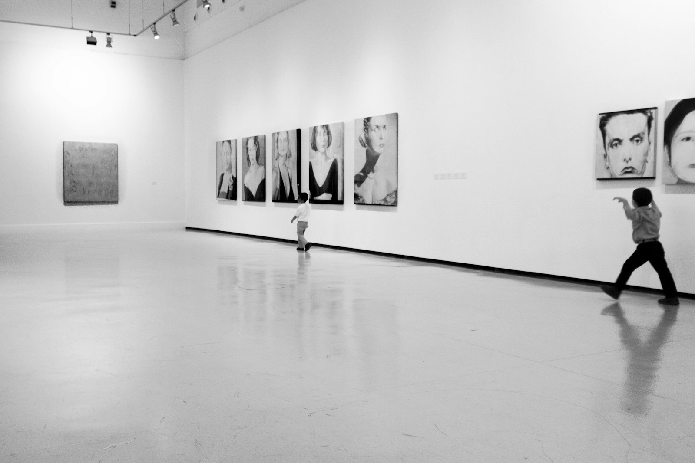
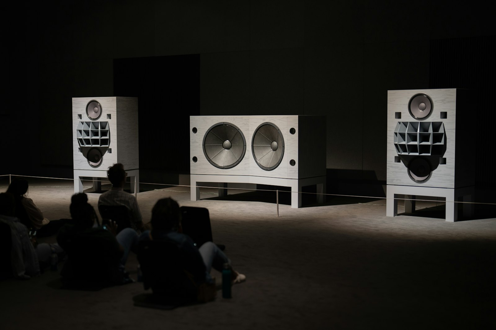
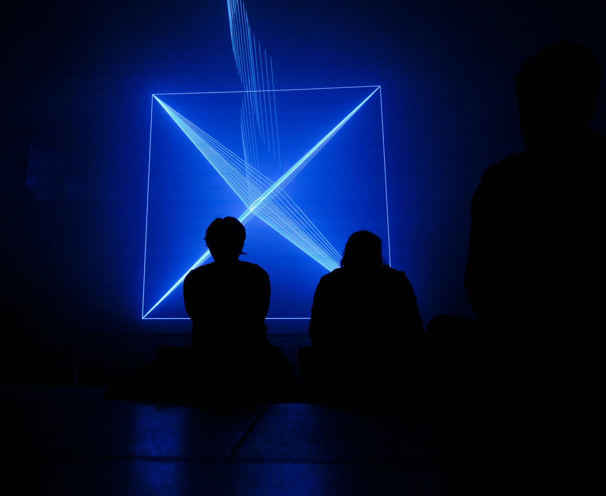

01 · Brief
A world-class room with a twenty-minute queue.
The centre reopened in a former power station and became the city's most-visited gallery in two years. The website didn't keep up.
Tickets were buried under "Visit", weekends sold out at the door, and the front desk took dozens of calls a day asking whether the sound installation was loud or the light piece was safe for someone with epilepsy.
The brief: move people from walk-up queues to booked, spread-out arrivals, and answer the "what's it like?" questions before anyone has to ask.
"We have the best room in the city, and people spend their first twenty minutes queuing for it."
- Goal 1Booked, not queued
Most weekend visitors arrive with a timed ticket.
- Goal 2Spread the peak
Move visitors from the 12:00–15:00 crush to quieter slots.
- Goal 3No surprises
Sound, light and access information before you arrive.
02 · Research
Where the day goes wrong.
Illustrative data: figures show the research method, not real measurements.
- 12 monthsof ticket and door-count data
- 18intercept interviews at the entrance
- 6sessions with sensory-sensitive visitors and an access panel
- 8venues compared for ticketing and access content
- 31%of Saturday walk-ups waited more than 20 minutes
- 1 in 4phone calls asked "is it loud?" or "is there strobe?"
- 64%of visitors had less than two hours
- 5 clicksfrom the home page to a ticket
"I didn't know you could book. I'd have come at eleven."
"I need to know about the sound before I'm in the room, not when I'm already in it."
"We've got an hour and a half before our train. What should we actually see?"
03 · Define
Three visitors, three questions.
-

Persona 1
The weekend family
"Will the kids last, and will we have to queue?"
- Needs
- Quiet slots, free under-18 tickets, a café break in the plan.
- Frustration
- Arriving at noon on Saturday with a buggy and no booking.
-

Persona 2
The 90-minute visitor
"What's worth seeing in the time I have?"
- Needs
- Time per exhibition, a route in walking order, what to skip.
- Frustration
- Spending half the visit finding the good rooms.
-

Persona 3
The sensory-aware visitor
"Is anything loud, dark or flashing, and can I avoid it?"
- Needs
- Warnings on the listing, a route that avoids triggers, a quiet hour.
- Frustration
- Finding out at the door, or not at all.
- HMW make booking a slot quicker than joining the queue?
- HMW nudge people towards quiet times without hiding busy ones?
- HMW plan a visit around the time someone actually has?
- HMW warn about sound and light where people decide, not where they arrive?
04 · Structure
Eight menus became four tasks.
Before
- Home
- Exhibitions
- Events
- Learning
- Visit
- Hours
- Getting here
- Tickets (3 levels deep)
- Accessibility (PDF)
- Shop
- Support us
- About
After
- What's on
- Time needed, sound, light and kids on every listing
- Plan a visit
- Route by time available
- Step-free and calm options
- Book tickets
- Always one tap away, in the header
- Access & sensory guide
- An HTML page, not a PDF
A card sort with 14 visitors put "Is it loud?" under What's on, not Accessibility. So sensory information lives on the listing itself, and the access page goes deeper.
05 · Wireframes
Decide the content before the look.
-
What's on as a list, not a grid
Titles do the work; tags carry time, sound and light. A grid of posters hid the information visitors actually asked for.
-
Planner: question first
One question ("How long have you got?") and three toggles. The route appears as a numbered list, with a cross-section map as support.
-
Tickets: day, time, people
Three steps on one page, with a summary that is always visible. Sold-out slots stay on screen, crossed out, so the grid never jumps.
06 · Visual design
Two colours and a signal.
- Signal means "act" or "you are here". It marks the booking button, the selected tab and your route. It is never decoration, and never text on paper (1.03:1).
- Photography stays black and white until you hover or open it. The art provides the colour, not the interface.
- Square corners and visible rules. They echo the building's switchboards and concrete grid.
Archivo, expanded 112–125%: headlines and the wordmark. Wide, industrial and very legible at size.
IBM Plex Mono: labels, times, levels and booking codes. It reads like signage in the building.
07 · Testing
Six people, five tasks, six changes.
Illustrative data. Moderated sessions on phones, including two participants with sensory sensitivities.
| Task | Round 1 | Round 2 |
|---|---|---|
| Book two adults and a child for Saturday | 4/6 | 6/6 |
| Find out whether Signal / Noise is loud | 3/6 | 6/6 |
| Plan a 90-minute visit without stairs | 2/6 | 5/6 |
| Pick the quietest slot tomorrow | 3/6 | 6/6 |
| Use a membership ticket | 4/6 | 6/6 |
- Percentages became words. "62% full" meant nothing; "Quiet", "Busy" and "12 left" were read instantly.
- Warnings moved to the list. People decided from the list and never opened the detail, so "Loud" and "Flashing light" are now tags on the row.
- The map got a list. Nobody could follow a route from the cross-section alone. The numbered list leads, and the map supports it.
- Sold out stays visible. Hiding full slots made the grid jump and looked like a bug. They're now crossed out and disabled.
- Past times are hidden. On the day, eleven struck-through morning slots pushed the bookable ones off screen.
- A child needs an adult. Two people booked only child tickets. The error now says why, and how to fix it.
08 · Handoff
What the team got.
Design tokens
Paper, ink, signal and error colours with contrast notes; type scale with width axis values; spacing on a 4px grid.
Components
Exhibition row, sensory tag, segmented control, day picker, slot card, ticket stepper, error summary, booking dialog.
Content rules
Every listing states time needed, sound and light. Capacity is said in words. Errors say how to fix the problem.
Analytics
Events for planner use, quiet-slot selection, warning-tag views and booking errors, to track the three goals.
Phase 2
- Live capacity from the door counters, replacing forecast fill.
- In-gallery mode showing the route on your phone, room by room.
- Member accounts with saved tickets and early booking.
- Dutch, German and English content, with plain-language reviews.